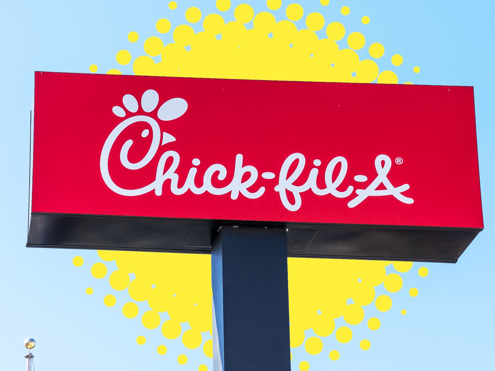
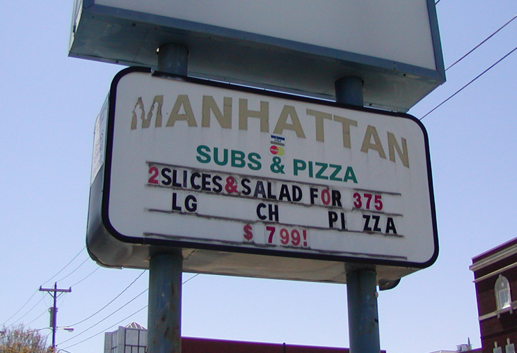
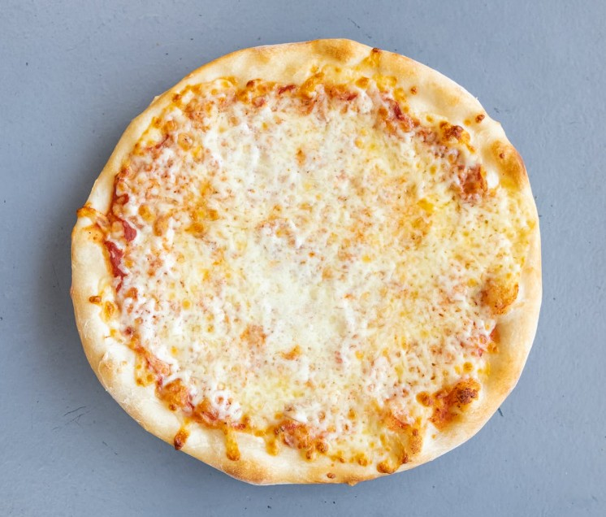
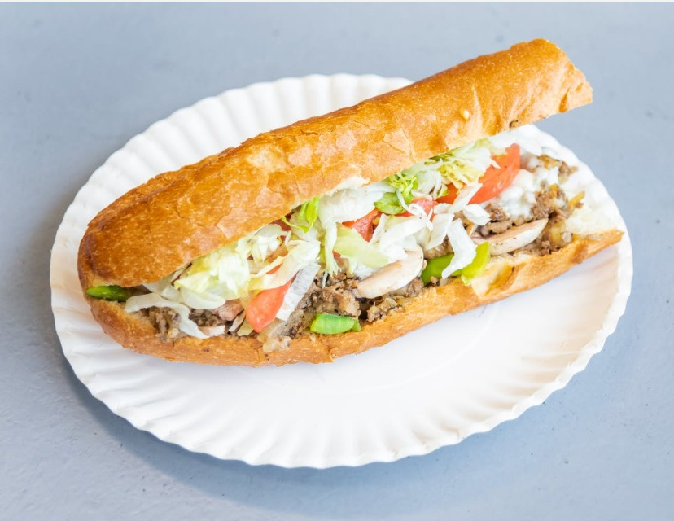
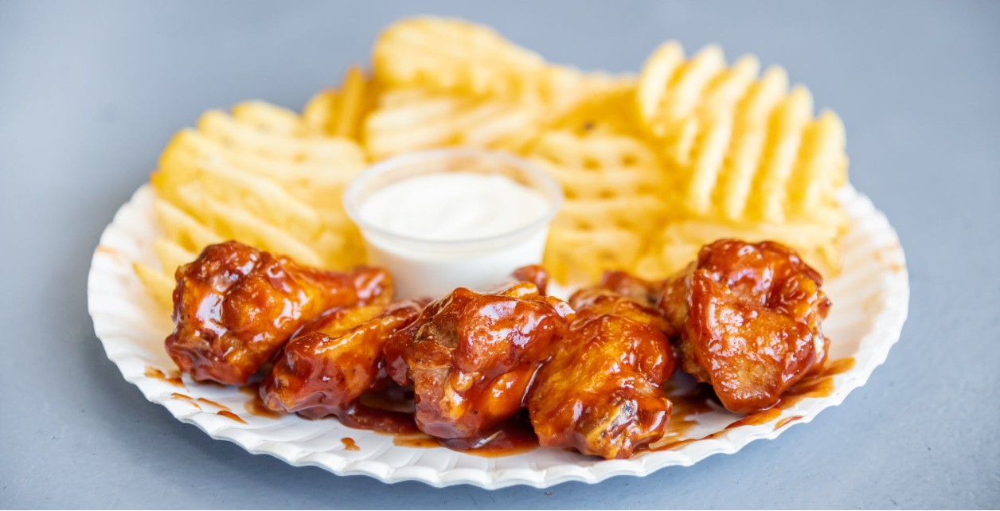
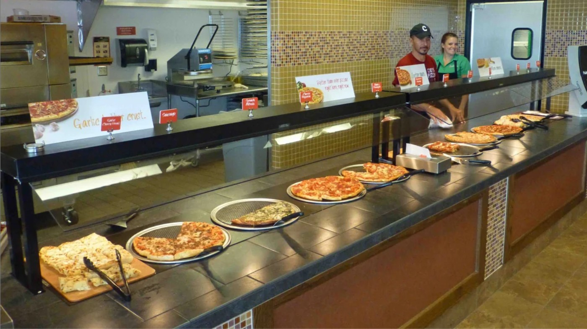
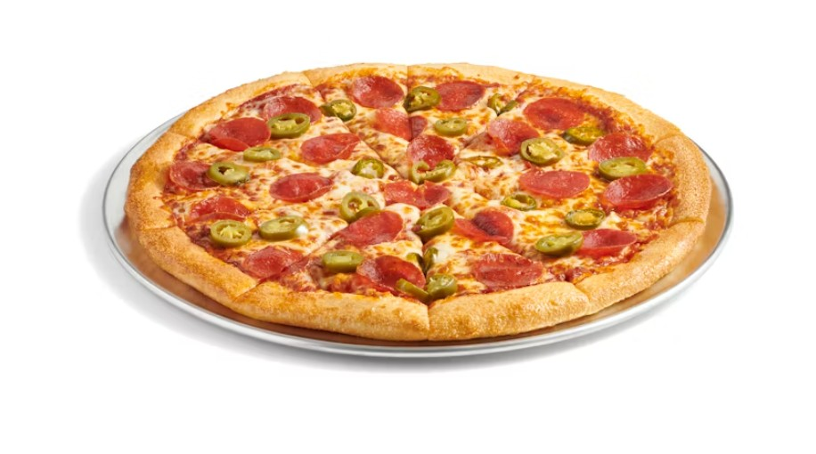

Welcome to the UNCG Campus Food Blog
There are lots of good places around Greensboro to get a bite.
As a college student, it can be hard to find places that are affordable and still tasty!
Below are 3 restaurants that might peak your interest without breaking the bank. Be sure to visit at
least one of these!
EUC Chick-fil-a

Location: 516 Stirling St
Hours: 7:30AM-8PM
You can't ever go wrong with Chick-fil-a. Open daily during the school year, this place can
be the perfect place to grab some food. It has lots of seating and is located in the EUC building
right on campus!
Chick-fil-a Chicken Sandwich

Chicken patty on a buttered bun.
Mac & Cheese

Creamy chedder-style mac & cheese.
Hand-Spun Milkshake

Flavors include: Vanilla, Chocolate, Strawberry, and Cookies & Cream
Manhattan Pizza & Subs

Location: 449 Tate St
Hours: 12PM-3AM
Located just off campus, Manhattan Subs is a quick walk for some decent food.
The hours are unmatched, being the only restaurant in the area that is open as late as it is.
Cheese Pizza

Classic 10" pizza with a doughy crust
Philly Steak & Cheese Sub

Chopped steak matched with provolone cheese, lettuce, tomatoes, mayo & hourse dressing.
Wings & Waffle Fries Special

Choice of 5 or 10 wings with a side of waffle fries.
Cici's Pizza

Location: 3379 Battleground Ave
Hours: 11AM-10PM
Although this list already has a restaurant with pizza, I had to add this one. Located off
one of the major roads in Greensboro, its a quick drive for all you can eat pizza!
Create your own pizza

Offering a wide variety of toppings
Baked pasta

Pasta with a choice of Marinara or Alfredo Sauce
Fudge Brownies

Rich, fudgy brownies topped with powdered sugar